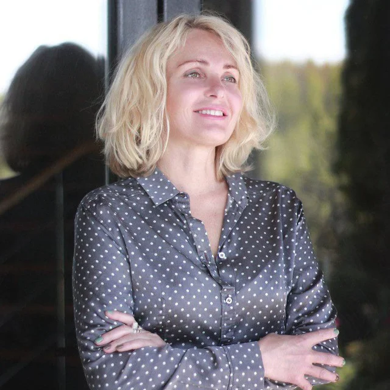

Эмоциональные трудности
Тревожность, стресс, подавленность и панические атаки.
ПСИХОЛОГ · МОСКВА И ОНЛАЙН
Вместе найдём решения ваших ситуаций и пространство для перемен.
Татьяна Садчикова — практикующий психолог, трансактный аналитик.

01 / ОБО МНЕ
Я помогаю разобраться в переживаниях, отношениях и жизненных переменах.
В работе опираюсь на индивидуальный подход и методы трансактного анализа. Вместе мы сможем внимательнее посмотреть на вашу ситуацию и найти подходящие вам решения.
РУДН — прикладная психология
ЕТА — трансактный анализ
MBI МиМБ
МГУ леса — инженер лесного хозяйства
Бизнес-тренер по эмоциональной ассертивности, сертифицированный специалист PCM.
02 / НАПРАВЛЕНИЯ РАБОТЫ
Каждая ситуация уникальна. Начать можно с того, что беспокоит вас сейчас.
Тревожность, стресс, подавленность и панические атаки.
Сложности в общении с партнёром, близкими и окружающими.
Неуверенность в себе и трудности с принятием решений.
Вопросы, связанные с работой и профессиональной жизнью.
Поддержка в период перемен, утраты и важных жизненных переходов.
03 / ФОРМАТ И СТОИМОСТЬ
О деталях и времени встречи можно договориться при записи.
01 / ИНДИВИДУАЛЬНО
Личная встреча для работы с вашими запросами.
5 000 ₽02 / ОНЛАЙН
Встреча в удобном для вас месте, в том числе из-за рубежа.
5 000 ₽ / сеанс03 / ВМЕСТЕ
Работа над отношениями с партнёром, детьми или родителями.
7 000 ₽ / встреча04 / ПАКЕТ
Для последовательной работы над вашим запросом.
21 000 ₽Стоимость указана по данным исходного сайта. Уточняйте актуальные условия при записи.
04 / КОНТАКТЫ
Напишите или позвоните, чтобы договориться о консультации.